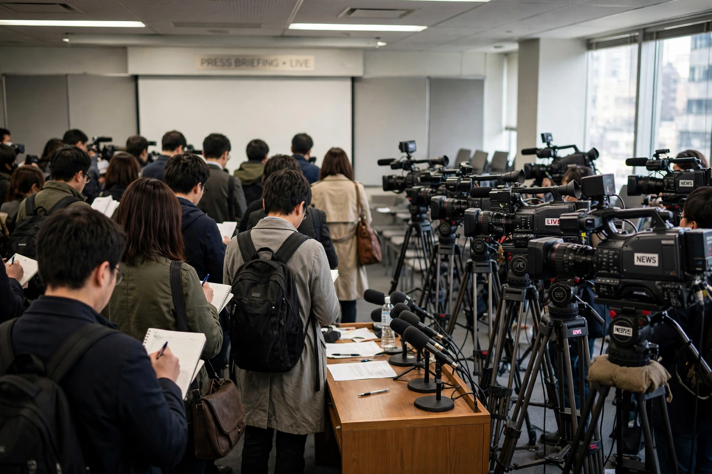

Top stories
Breaking news and the day's top stories from CBS News

CBS News' site fronts its broadcast brands — CBS Evening News, CBS Mornings, Face the Nation and 60 Minutes — with 24/7 streaming from CBS News' live channel and reporting from its bureaus.
World
CBS correspondents around the globe
Foreign reporting is a historic strength of the network.
Politics
Washington, campaigns and Face the Nation
Political coverage and Sunday interview highlights.
U.S.
National news and CBS stations' reporting
Domestic stories including crime and weather.
60 Minutes
Segments from the newsmagazine
The long-running programme's reports are featured prominently.